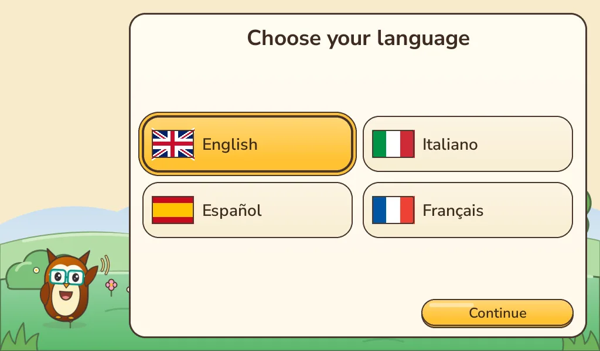
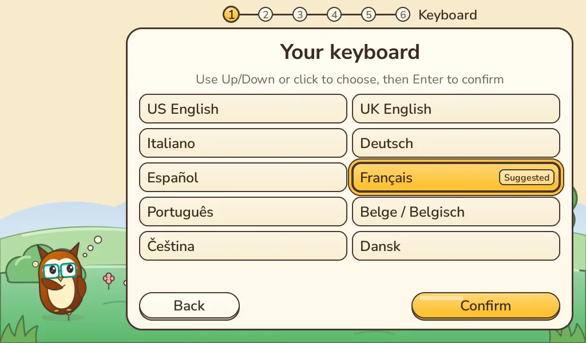
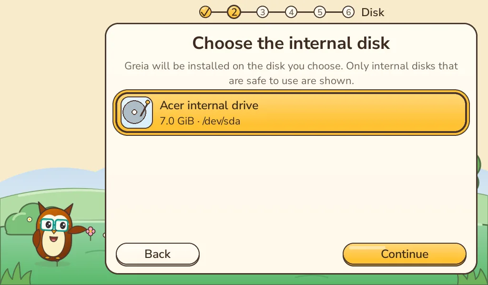
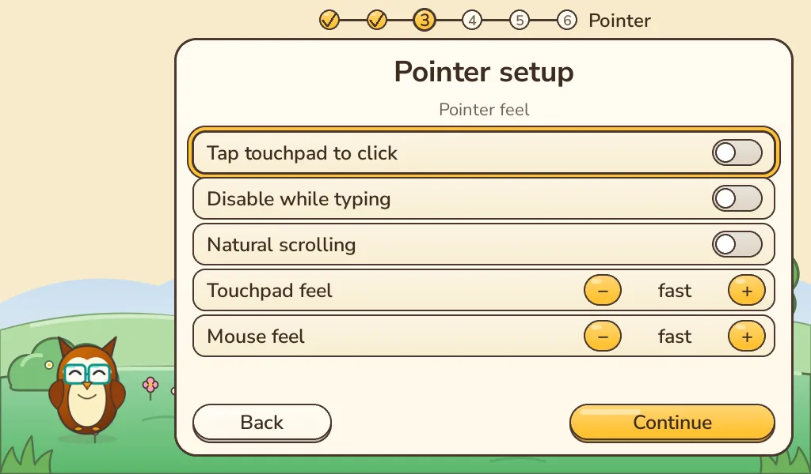
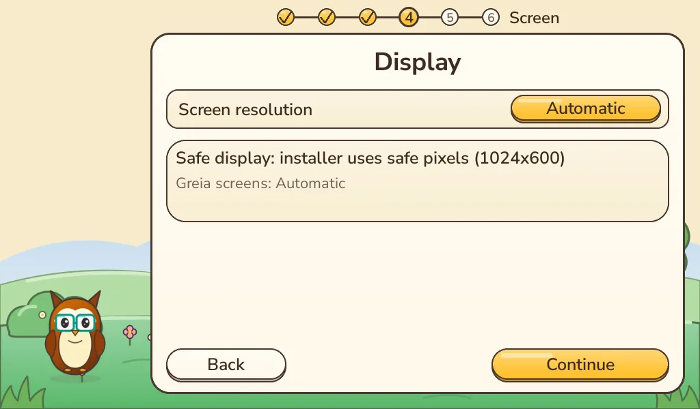
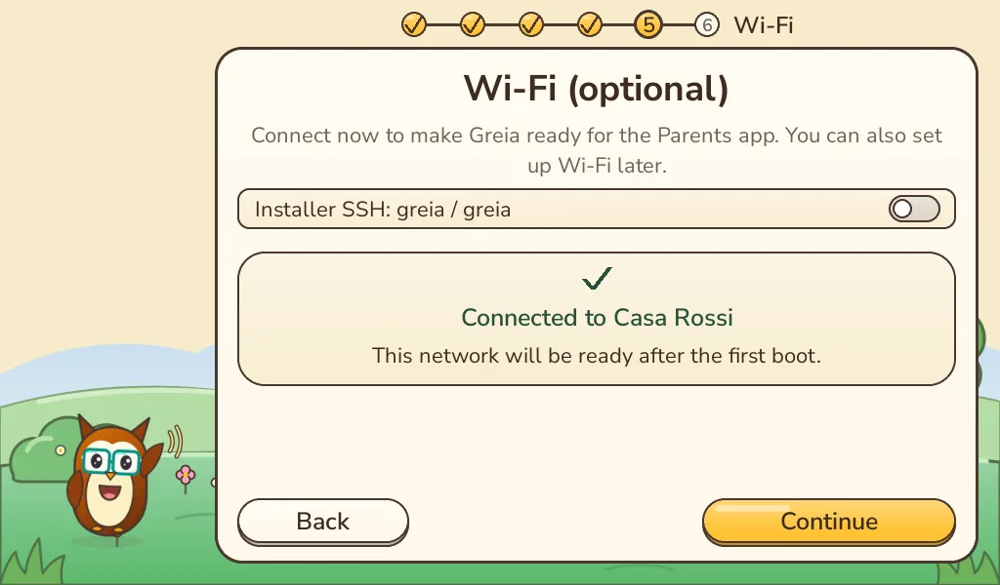
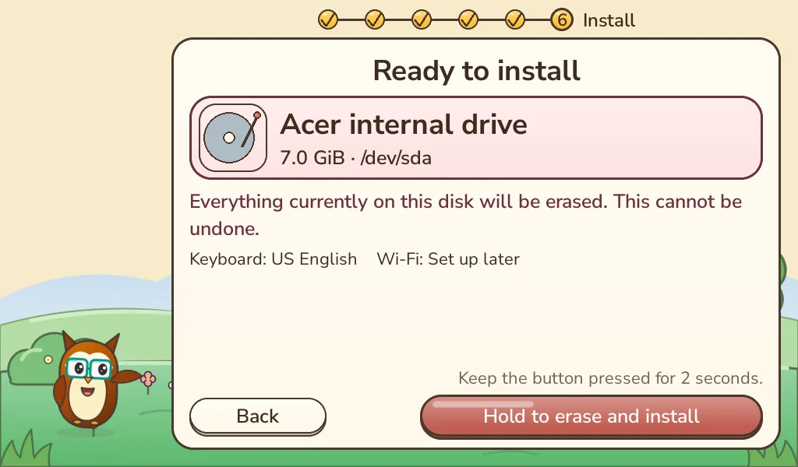
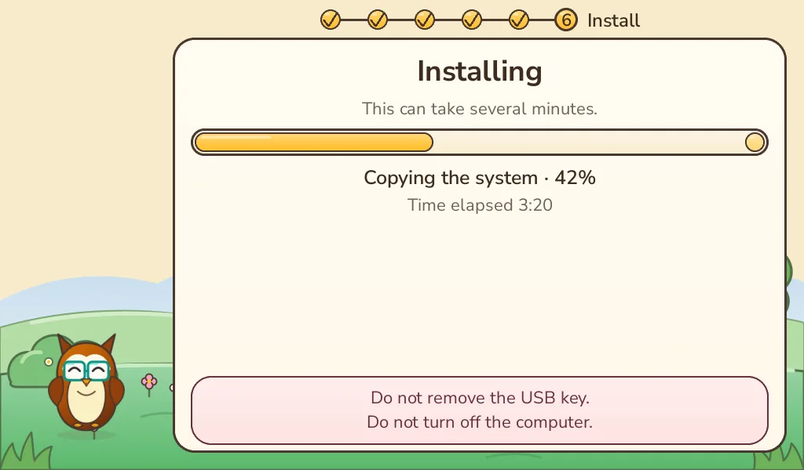
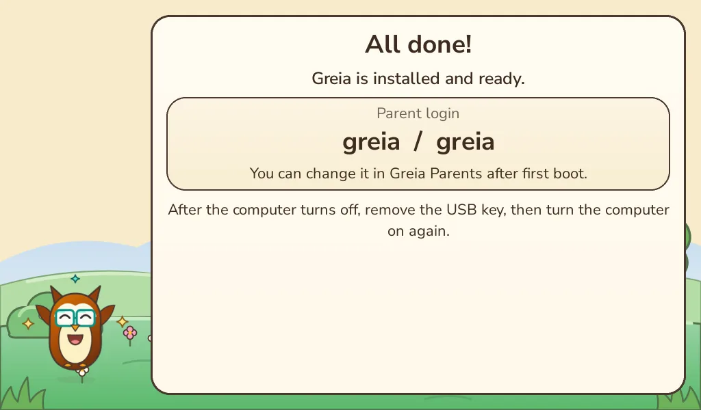

Netbooks & PCs
From first-generation netbooks onward. The early Acer Aspire One is the demanding low-resource reference.
- Whole-machine Greia installation
- Child Shell instead of a desktop
- Version …

Download the Greia installer, write it to a USB stick, start the computer from it and follow the friendly installer. No Linux knowledge needed.
Greia installs on the whole internal disk. Copy anything you want to keep from the target computer first.
Writing the installer erases the stick. Use one with nothing important on it, 4 GB or larger.
Reference machine: the first-generation Acer Aspire One. Other Intel/AMD PCs may work but are not yet tested.
Use the computer you have now. The download is a ready-made disk image (.img): it must be written to the stick, not copied onto it like a normal file.
.img you downloaded.Rufus ↗: choose the stick under Device, press SELECT to pick the Greia image, then START. An .img is written as-is.
Raspberry Pi Imager ↗: Choose OS → Use custom → the Greia image, then choose the stick and Write.
Get-FileHash -Algorithm SHA256 "$HOME\Downloads\greia-os-installer.img"After flashing, Windows may say it can't read the stick or offer to format it. Choose Cancel. That is normal: the stick now holds a Linux installer.
.img.dddiskutil list # find the stick, e.g. /dev/disk4
diskutil unmountDisk /dev/disk4
sudo dd if=~/Downloads/greia-os-installer.img of=/dev/rdisk4 bs=4m
diskutil eject /dev/disk4Replace disk4 with your stick's number. A wrong number overwrites another disk. Press Ctrl+T to see progress.
shasum -a 256 ~/Downloads/greia-os-installer.imgAfter flashing, macOS may say the disk is not readable. Choose Ignore, not Initialize. Your Mac is only used to prepare the stick: this installer is not meant for installing Greia on a Mac.
.img and Start Restoring.ddlsblk # find the stick, e.g. /dev/sdb
sudo dd if=greia-os-installer.img of=/dev/sdb bs=4M status=progress conv=fsyncUse the whole device (/dev/sdb), not a partition (/dev/sdb1). Unmount it first if your desktop mounted it.
sha256sum greia-os-installer.imgMost computers show a one-time boot menu if you tap a key right after switching on. Pick your brand to see the usual key.
Put the Greia USB stick in the computer that will receive Greia. Connect power, screen and keyboard. Shut the computer down completely.
Switch on and immediately tap the key repeatedly (about twice a second) until a menu of devices appears.
It may be listed as USB HDD, Removable device or by the stick's brand. Press Enter. The Greia splash and then the installer appear.
FIND YOUR BOOT KEY
On older Acers the menu may be switched off: press F2 at power-on, set “F12 Boot Menu” to Enabled in the Main tab, save with F10.
Not listed or not working? The startup screen often says “Press … for boot menu”. Your computer's manual has the reliable answer.
This preview is tested on legacy BIOS computers like the Acer Aspire One. Starting on newer UEFI PCs is included but still experimental. If the stick isn't listed, the firmware setup (usually F2 or Del at power-on) may need Secure Boot turned off or Legacy / CSM boot turned on. Only change settings you know how to change back, and never erase a disk to make it start.
The installer is graphical and works with a mouse, touchpad or keyboard. Nothing is erased until the very last screen, and only after you hold the button down.









Screens rendered from the real installer drawing code (English, 1024×600). Disk and network names are sample data.
Greia starts straight into its own world. A short welcome lets your child choose a name and a picture.
On the child-selection screen, hold S + T together for five seconds. The Parent login is greia / greia; change it in Greia Parents.
Greia always opens on the profile picker, so each child keeps their own saves, creations and rewards.
The boot menu wasn't opened in time. Switch off fully, switch on and tap the boot key straight away. Try another USB port; front ports on desktops are sometimes not bootable.
Re-write the stick and let validation finish. On newer UEFI PCs see “Newer PC and the stick doesn't appear?” above. Some very old computers can't start from every stick: try another one.
Download the image again, check its SHA-256 and try a different USB stick. Don't use a stick whose write failed.
Stop there. Greia only offers internal disks it considers safe. Don't wipe or repartition anything by hand; write to us with the computer model.
Note or photograph the message. Nothing was erased if it stopped before you held the install button. Send us the message and computer model.
Only by reinstalling it from its own recovery media. That's why the backup comes first.
If Greia made a child's computer a happier place and you'd like to help it grow, a donation is very welcome, never required. Schools, NGOs, sponsors and companies can also work with us on pilots, custom Activities, OS editions and official partnerships.
Each image names the hardware it was tested on. Raspberry Pi keyboard computers are first-class Greia targets with their own images.
From first-generation netbooks onward. The early Acer Aspire One is the demanding low-resource reference.
Connect a display and give the child the computer built into the keyboard. The Pi 400 is a first-class Greia target.
The same keyboard-computer simplicity on newer hardware, with the same profiles, Activities and Parent controls.
A PC installer is not a Raspberry Pi image. Pi images will appear here when they exist.
Tried Greia on a computer we haven't listed? Got stuck? Want to help? We read every message.